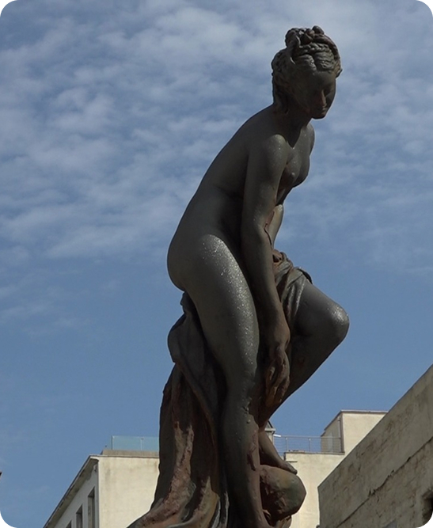

Una porta per la città
Piazza Mercato del Pesce è uno dei luoghi più caratteristici del centro storico della città di Trapani. Situata a pochi passi dal porto e dal lungomare, la piazza è storicamente legata alle attività di pesca e al commercio del pesce, che da secoli rappresentano una parte fondamentale dell’economia e della cultura locale. Grazie alla sua posizione vicino al mare, la piazza è sempre stata un punto di incontro tra pescatori, commercianti e cittadini.
Il mercato del pesce che si svolge in questa piazza è uno dei più antichi e tradizionali della città. Fin dalle prime ore del mattino, i pescatori portano il pescato fresco direttamente dalle barche, offrendo una grande varietà di prodotti del mare provenienti dal Mar Mediterraneo.
Il mercato è conosciuto per la sua atmosfera vivace e autentica, fatta di colori, profumi e richiami dei venditori che attirano l’attenzione dei clienti. Ad oggi è uno dei luoghi più frequentati nella città.